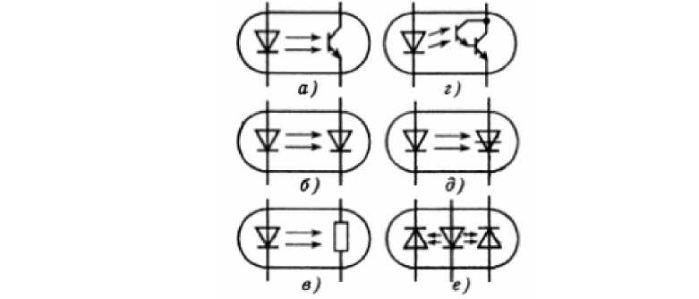

электронный
ресурс по учебной дисциплине 1-58 01 01 - "ИНЖЕНЕРНО-ПСИХОЛОГИЧЕСКОЕ ОБЕСПЕЧЕНИЕ ИНФОРМАЦИОННЫХ ТЕХНОЛОГИЙ"
|
||
| Оглавление | Программа | Теория | Практика| Контроль знаний | Об авторах | ||
Тема 2
Оптоэлектронные приборы и устройства
1. Оптоэлектроника одно из направлений в функциональной электронике.
Оптоэлектроника одно из наиболее развитых направлений в функциональной микроэлектронике, поскольку оптические и фотоэлектрические явления достаточно хорошо изучены, а технические средства, основанные на этих явлениях, длительное время используются в электронике (фотоэлементы, фотоэлектронные умножители, фотодиоды, фототранзисторы и др.). Тем не менее, оптоэлектроника как самостоятельное научно-техническое направление возникла сравнительно недавно, а ее достижения неразрывно связаны с развитием современной микроэлектроники.
Первоначально оптоэлектроника считалась сравнительно узкой отраслью электроники, изучающей лишь полупроводниковые светоизлучатели и фотоприемники. Однако в последнее время понятие «Оптоэлектроника» значительно расширилось. Теперь в него включают и такие недавно возникшие направления, как лазерная техника, волоконная оптика, голография и др.
В соответствии с рекомендациями МЭК (Международной электротехнической комиссии) оптоэлектронный прибор определяется как прибор, чувствительный к электромагнитному излучению в видимой, инфракрасной или ультрафиолетовой областях; или прибор, излучающий и преобразующий некогерентное или когерентное излучение в этих же спектральных областях; или же прибор, использующий такое электромагнитное излучение для своей работы.
Оптоэлектроника основана на электронно-оптическом принципе получения, передачи, обработки и хранения информации, носителем которой является электрически нейтральный фотон. Совмещение в оптоэлектронных функциональных устройствах двух способов обработки и передачи информации оптического и электрического позволяет достигать огромного быстродействия, высокой плотности размещения хранимой информации, создания высокоэффективных средств отображения информации. Очень важным преимуществом элементов оптоэлектроники является то, что они оптически связаны, а электрически изолированы между собой. Это обеспечивает надежное согласование различных оптоэлектронных цепей, способствует однонаправленности передачи информации, помехоустойчивости каналов передачи сигналов. Изготовление полупроводниковых элементов оптоэлектроники - оптронов совместимо с интегральной технологией, поэтому их создание может быть включено в единый технологический цикл производства интегральных микросхем.
2. Оптоэлектроннные приборы.
Оптоэлектронный прибор в широком смысле определяется как прибор, использующий для своей работы оптическое излучение. Формами этого использования могут быть генерация, детектирование, преобразование, передача информационных сигналов. Однако практически этим термином обобщаются приборы и устройства, содержащие излучатели и приемники, взаимодействующие друг с другом. Приборы же, в которых выполняется лишь один вид преобразования, — излучатели, индикаторы, фотоприемники, модуляторы и др. - чаще рассматривают отдельно как элементы оптоэлектронных приборов и систем.
Оптопары. Оптопарой называют оптоэлектронный прибор, в котором конструктивно объединены в общем корпусе излучатель на входе и фотоприемник на выходе; взаимодействующие друг с другом оптически и электрически. Связь между компонентами оптопары может быть прямой или обратной, положительной или отрицательной, одна из них (электрическая или оптическая связь) может отсутствовать.
Иногда оптопару отождествляют с оптроном, однако последний термин является более широким. Между элементами оптрона может быть осуществлена как оптическая, так и электрическая связь (прямая или обратная, положительная или отрицательная). Вход и выход оптрона также могут быть как электрическими, так и оптическими соответственно. В настоящее время широкое распространение получили лишь оптроны с прямой оптической связью, т.е. оптопары - рисунок 2.1.
Рисунок 2.1 – Функциональные схемы оптопар
Основные функциональные разновидности этих приборов представлены на рисунке 2.1, где И - излучатель, ФП - фотоприемник; УС - устройство связи. Оптопара с прямой оптической и обратной электрической связью (рис. 2.1, а) используется как элемент развязки, т.е. оптрон с оптическим входом и выходом, и представляет собой преобразователь световых сигналов. Это может быть простое усиление (ослабление) интенсивности света, преобразование спектра или направления поляризации, преобразование некогерентного излучения в когерентное и т.п. Если в таком оптроне фотоприемник и излучатель многоэлементные, то он может выполнять функцию преобразователя изображений. В оптроне с электрической и оптической связью (рис. 2.1, б) при определенных условиях может осуществляться частичная или полная регенерация (восстановление) входного сигнала за счет обратной связи, в силу чего на вольтамперной характеристике появляется падающий участок или несколько участков - такой прибор получил название регенеративного оптрона. В регенеративном оптроне могут реализовываться любые комбинации видов входных и выходных сигналов (электрических или оптических).
Важным элементом оптопары является оптический канал между излучателем и фотоприемником. Существуют три его разновидности. Прежде всего, это простой светопровод, предназначенный для передачи энергии излучения на фотоприемник; обычно он выполняется в виде прозрачной иммерсионной среды. Возможно и такое конструктивное решение, при котором в зазоре между излучателем и приемником имеется доступ извне; в этом случае мы имеем оптопару с открытым оптическим каналом. Наконец, оптический канал может быть выполнен из материала, светопропускание которого изменяется при внешних воздействиях; такой прибор называют оптопарой с управляемым оптическим каналом.
Функциональные возможности оптопар:
а) импульсный трансформатор – диодная и транзисторная оптопары; оптоэлектронный переключатель; оптоэлектронный развязывающий усилитель;
б) переключатель – тиристорная, транзисторная и резисторная оптопары;
в) переменный резистор, потенциометр - резисторная оптопара и ее комбинации;
г) переменный конденсатор, варикап - оптопара с варикапом;
д) электрическая батарея - диодная оптопара и ее наборы;
е) линия связи - волстрон;
ж) полевой транзистор - оптопара с управляемым оптическим каналом;
з) бистабильное устройство, триггер - регенеративный оптрон и его комбинации;
и) датчик - оптопара с открытым оптическим каналом, оптопара с управляемым оптическим каналом;
к) электронно-оптический преобразователь - оптрон с оптическим входом и выходом.
Среди оптопар, используемых для развязки - рис. 2.2, наиболее широко представлены такие, у которых в качестве фотоприемника применены транзистор (а), диод (б), резистор (в), составной транзистор (г), тиристор (д), пара диодов (е) (для дифференциальной схемы).

Рисунок 2.2 – Оптопары для гальванической развязки
На рис. 2.3 представлены примеры конструкций оптронов: 1 - излучатель, 2 - фотоприемник, 3 - оптический канал, 4 - корпус, 5 - выводы, 6 - отражающая поверхность.
Рисунок 2.3 – Конструкции оптронов
Резисторные оптопары. При засветке фоторезисторов их сопротивление уменьшается от Rj (темпового) до Rcb (при освещении). Одним из основных параметров резисторных оптопар является отношение этих сопротивлений; значение Rt/Rqb может достигать 104-107. Фоторезисторы обладают, как правило, большой инерционностью. Именно поэтому в фоторезисторных оптопарах в качестве источников излучения широко применяют миниатюрные лампы накаливания, к достоинствам которых следует отнести хорошую воспроизводимость параметров, большой срок службы, малую стоимость. Невысокое быстродействие (время переключения - примерно 10-2 с) ламп накаливания в оптопарах этого типа не является их недостатком, поскольку общее время переключения (до 10-1 с) определяется фотоприемником. Кроме ламп накаливания в резисторных оптопарах используют светодиоды, спектр излучения которых хорошо согласован со спектрами возбуждения фотоприемников.
Некоторые характеристики резисторных оптопар представлены на рисунке 4. Увеличение тока I1 на входе оптопары сопровождается увеличением светового потока излучателя, в результате чего Rcb уменьшается (рис. 2.4, а). Повышение температуры Т ведет к снижению подвижности свободных носителей заряда в фоторезисторе, увеличению RCB, а следовательно, к уменьшению I2 при том же напряжении U2 на выходе (рис. 2.4, б). С ростом Т не только происходит увеличение RСB, но снижается и RT (растет концентрация собственных носителей заряда в зоне проводимости полупроводника). При этом отношение RT / RCB очень сильно уменьшается (при 70° С оно может составлять лишь примерно 102), что делает резисторную оптопару практически непригодной для использования при высоких температурах.
Инерционность резисторных оптопар сказывается на их частотных характеристиках, что иллюстрируется рис. 2.4, в. На рисунке по вертикали отложен коэффициент передачи по току, который в случае оптопар этого типа носит формальный характер, поскольку в выражение для kI подставляется просто значение тока I2, соответствуют ее окончанию линейного участка вольтамперной характеристики фоторезистора.
Рисунок 2.4 – Характеристики резисторных оптопар
Достоинствами резисторных оптопар, определяющими их широкое применение в различных типах оптоэлектронных схем, являются линейность и симметричность выходной характеристики (независимость от полярности включения фоторезистора), отсутствие фото- ЭДС, большие значения достижимого напряжения на выходе (до 250 В) и темнового сопротивления (Rt=106 –1011 Ом).
3. Диодные оптопары.
Диодные оптопары - оптопары этого типа изготовляют на основе кремниевых p-i-n фотодиодов и арсенидгаллиевых светодиодов. На рис. 2.5 изображены типичные зависимости коэффициента передачи по току kI от входного тока к, напряжения на выходе U2 и температуры T. Из рис. 2.5, а следует, что у диодных оптопар kI остается практически постоянным в широком диапазоне входных токов, что обусловлено постоянством в этом диапазоне квантового выхода п светодиода. Спад в области больших входных токов (когда начинает сказываться разогрев прибора) также определяется поведением h. Квантовый выход фотодиода п при этом, как правило, не меняется. Это следует из того, что зависимость фототока от падающего потока излучения линейна в рабочем диапазоне значений потоков.
Разогрев оптопары может привести и к снижению h. На рис. 2.5, б изображена зависимость коэффициента передачи по току диодных оптопар от обратного напряжения на выходе прибора - она довольно слаба. Температурная же зависимость kI диодных оптронов выражена более ярко (рис. 2.5, в), что объясняется зависимостью от Т параметров всех элементов оптопары, и в первую очередь - излучателя.
Рисунок 2.5 – Характеристики диодных оптопар
В целом, поскольку у современных диодных оптопар значение коэффициента передачи по току составляет единицы процентов, это означает, что на выходе таких оптопар практически можно получать лишь токи, не превышающие 1...2 мА.
Предельно достижимое время переключения tn диодных оптопар может изменяться в довольно широких пределах (0,1-10 мкс) в зависимости от марки прибора. Но на практике получить подобное быстродействие довольно трудно, так как из-за малости выходного тока их приходится включать на большую нагрузку В этом случае существенным оказывается уже время перезарядки, определяемое сопротивлением нагрузки RH и выходной емкостью оптопары С2. Так, при RH=2...20 кОм и С2=50 пФ постоянная времени перезарядки равна 0,1-1 мкс, что сравнимо по величине с предельными значениями tn.
Диодные оптопары могут работать в вентильном режиме, когда оптрон выступает в качестве источника питания. Оптроны, предназначенные для этих целей, имеют повышенное (3-4 %) значение kI однако КПД таких приборов также составляет лишь около одного процента.
Среди выпускаемых диодных оптопар можно выделить, наконец, группу приборов, оптический канал которых выполнен в виде световода длиной 30-100 мм (волстроны). Эти приборы характеризуются высокой электрической прочностью (Uиз=20-50 кВ) и малой проходной емкостью (Спр = 0,01 пФ).
4. Транзисторные оптопары.
Транзисторные оптопары - к этому классу приборов относятся диодно-транзисторные (приемником излучения является фотодиод, один из выводов которого соединен с базой транзистора, введенного в состав оптопары) и транзисторые (приемником излучения служит фототранзистор) оптопары, а также оптопары с составным фототранзистором. Их параметры существенно отличаются друг от друга. Так, оптопары с составным фототранзистором обладают наилучшими передаточными характеристиками по току (в результате внутреннего усиления сигнала kI может достигать 1000 %), зато диодно-транзисторные имеют большее быстродействие (tn=2-4 мкс). При этом оказывается, что для оптопар перечисленных типов отношение kI/tn=D остается постоянным в широком интервале значений входных токов. Параметр D называют добротностью оптопары, его значение зависит от параметров изоляции (в частности, от Uиз).
Так же как и в случае диодных оптопар, материалом фотоприемников чаще всего является кремний; излучателями в таких приборах служат арсенид-галлиевые светодиоды.
Транзисторные оптопары привлекают внимание возможностью управления коллекторным током как оптическими методами, так и электрическими. Применение этих приборов позволяет получать большие значения коэффициента передачи по току и соответственно большие kI (чем они выгодно отличаются от диодных оптопар) при удовлетворительном быстродействии.
На рис. 2.6 приведены типичные зависимости kI от входного тока для транзисторной (кривая 3), диоднотранзисторнои (кривая 1) оптопар, а также для оптопары с составным фототранзистором (кривая 2). Сравнение этого рисунка с рис. 2.5,а показывает, что характеристики таких оптопар сильно отличаются от полученных для диодной оптопары. Это связано с тем, что коэффициент усиления транзистора зависит от тока базы и потому не является постоянной величиной.
Рисунок 2.6 – Характеристика транзисторных оптопар
Температурные зависимости kI транзисторной оптопары при больших (кривая 1) и малых (кривая 2) входных токах представлены на рис. 2.7. Видно, что при больших I1 коэффициент передачи по току с изменением температуры ведет себя примерно так же, как и в случае диодных оптопар (см, рис. 2.5, б). В общем случае характер кривых kI (T) определяется зависимостью от температуры квантового выхода как светодиода, так и транзистора.
Рисунок 2.7 – Температурные зависимости транзисторных оптопар
Особенностью всех оптопар с излучателями - светоидодами является уменьшение t1 и увеличение t2 с ростом входного тока. Именно поэтому соответствующие характеристики транзисторных и диодных оптопар оказываются сходными. Повышение температуры приводит к возрастанию инерционности транзисторных оптопар. Одновременно увеличивается и темновой ток фотоприемника. Это особенно сильно сказывается в случае оптопар с составными фототранзисторами: при увеличении температуры от 25 до 100°С их темновой ток возрастает в 104-105 раз.
5. Тиристорные оптопары.
Тиристорные оптопары используют в качестве ключей для коммутации сильнотоковых и высоковольтных цепей как радиоэлектронного (U2=50-600 В, I2=0,1-10 А), так и электротехнического (U2=100-1300 В, I2=6,3-320 А) назначения. Важным достоинством этих приборов является то, что, управляя значительными мощностями в нагрузке, они, тем не менее, по входу совместимы с интегральными микросхемами.
В зависимости от гарантируемых значений коммутируемых напряжений и токов, а также от времени переключения тиристорные оптопары подразделяются на большое число групп. Типичные значения t1 составляют 10-30 мс, t2=30-250 мкс. Поскольку тиристорные оптопары работают в ключевом режиме, то параметр kI для них лишен смысла. Поэтому удобнее характеризовать такие оптопары номинальным значением I1, при котором открывается фототиристор, а также максимально допустимым входным током помехи (максимальным значением I1, при котором еще не происходит включения фототиристора). Значение силы номинального входного тока для разных типов тиристорных оптопар лежит в пределах 20-200 мА.
Волстрон - прибор, в котором излучатель и фотоприемник неразъемно связаны друг с другом отрезком волоконно-оптического кабеля. Такой прибор выгодно отличается от традиционной короткой волоконно-оптической линии связи (ВОЛС), содержащей пару оптических соединителей, лучшей передаточной характеристикой, большей надежностью, меньшими габаритными размерами и стоимостью. Волстроны длиной от десятков сантиметров до нескольких метров незаменимы в качестве элементов электрической развязки в сверхвысоковольтной радиоэлектронной и электротехнической аппаратуре. Во многих случаях внутриобъектового применения они удобнее, чем короткие ВОЛС.
Октроны - оптопары с открытым оптическим каналом. В этих приборах излучатель и фотоприемник смонтированы отдельно друг от друга и специфика оптопары проявляется лишь в обеспечении наилучшей светопередачи. В оптопаре с управляемым оптическим каналом между излучателем и фотоприемником содержится элемент, светопропускание которого может регулироваться. Чаще всего это электронно-оптический (жидкий кристалл, сегнетокерамика) или магнитооптический материал - управление свойствами канала осуществляется электрически. Как элемент схемы такая оптопара представляет собой шестиполюсник с двумя входами: по цепи излучателя и по цепи управления оптическим каналом.
Светопропускание канала может изменяться и при других формах воздействия: давлении, засветке, нагреве и т.п. В этом случае оптопара с управляемым оптическим каналом, так же как и оптопары с открытым каналом, выступает в качестве сенсорного элемента - датчика.
Существует две разновидности оптопар с открытым каналом: с прямым прохождением лучей от излучателя к приемнику и с отражением лучей внешним объектом. В первом случае излучатель и приемник расположены напротив друг друга, а в зазоре между ними помещается светонепроницаемая подвижная преграда. Во втором случае оптические оси излучателя и приемника располагаются под углом. При отсутствии отражающего объекта энергия, излучаемая светодиодом, рассеивается в пространстве, не попадая на фотоприемник. При появлении объекта часть отраженной от него энергии попадает на приемник - возникает электрический сигнал о появлении объекта. Очевидно, что при изменении положения объекта сигнал изменится.
Оптоэлектронные датчики представляют собой преобразователи неэлектрических воздействий или внешних воздействующих факторов в адекватные им электрические сигналы.
Основные требования к такому датчику: высокая точность, однозначность, быстрота измерения; избирательность, (способность выделения данного воздействия на фоне других); многофункциональность (пригодность для одновременного контроля двух или нескольких
разнородных воздействий).
Общая схема любого оптоэлектроцного датчика представляет собой оптронную структуру, содержащую излучатель, фотоприемник, оптическую среду между ними, а также элементы электронного и оптического обрамления. Оптическая среда является чувствительным элементом, свойства которого изменяются под влиянием внешних факторов. По конструктивным признакам среди оптоэлектронных датчиков можно выделить четыре основные группы:
а) Оптопары с открытым оптическим каналом (рисунок 2.8) удобны для контроля числа и положения объектов, а также состояния их поверхности, считывания дискретной информации наличия жидкости и т.п. Из-за сложности различения двух близких положений промежуточного элемента (ПЭ) оптопары с открытым каналом используются главным образом в качестве предельных переключателей (счетчиков ситуаций «есть—нет»).
<
Рисунок 2.8 – Оптопары с открытым оптическим каналом
б) В интегрально-оптических датчиках в качестве чувствительного элемента используют плоский однослойный светопровод, изготовляемый методами интегральной оптики на диэлектрической подложке. С одного конца к светопроводу подсоединяется излучатель (лазер, светодиод), с другого - фотоприемник (обычно p-i-n фотодиод). В основе принципа действия таких датчиков лежит нарушение условия полного внутреннего отражения (ПВО) для световых лучей, распространяющихся вдоль светопровода, и, как следствие, — изменение сигнала фотоприемника.
Используются два основных механизма нарушения ПВО. Во-первых, это размещение промежуточной среды поверх светопровода и изменение ее показателя преломления под влиянием внешних факторов (ВФ) и действия электро-, магнитооптических и других эффектов (рисунок 2.9, а). По такой схеме работают, например, индикаторы вида жидкости. Другой механизм регулируемого нарушения ПВО основан на изменении площади оптического контакта промежуточного элемента со светопроводом под влиянием ВФ (рисунок 2.9, б). На таком принципе работают датчики давления, усилия, перемещения.
Рисунок 2.9 – Интегрально-оптических датчики
в) В датчиках с волоконно-оптическими связями содержатся самые разнообразные чувствительные элементы, располагаемые в месте разрыва обычной воле, изменяющие свои свойства под влиянием внешних возмущающих факторов и воздействующие на светопередачу ВОЛС. Наиболее простым является датчик с механической шторкой, перекрывающей большую или меньшую часть светового потока (рисунок 2.10,а). При тщательном выполнении механической части, использовании не одиночных волокон, а жгутов в таких приборах удается достигнуть удовлетворительной чувствительности, линейности, воспроизводимости измерений при широком диапазоне изменения контролируемого воздействия.
Наиболее широко распространенными являются датчики с чувствительным элементом мембранного типа (рисунок 2.10,б), в которых такие внешние воздействия, как давление, ускорение, вибрация, микроперемещения, преобразуются в изменение положения мембраны относительно торцов подводящего и отводящего световодов и тем самым в изменение сигнала фотоприемника
Рисунок 2.10 – Датчики с волоконно-оптическими связями
г) В волоконно-оптических датчиках чувствительным элементом является часть волокна. Эти датчики с амплитудной модуляцией обычно основаны на управляемом нарушении условия ПВО в месте резкого изгиба волокна (рисунок 2.11, а) или на некотором участке волокна, подвергнутом деформации (рисунок 2.11, б). Модуляция светопропуекания осуществляется вследствие изменения степени деформированности волокна или путем помещения изогнутой области в среды с различными показателями преломления. По данной схеме реализуются датчики давления, температуры, вибрации, микроперемещений, рефрактомеры.
Рисунок 2.11 – Волоконно-оптические датчики
6. Оптоэлектронные микросхемы.
Оптоэлектронные микросхемы - приборы этого типа содержат одну или несколько оптопар, а также согласующие элементы или электронные интегральные схемы, объединенные при помощи гибридной технологии в один корпус. Оптоэлектронные микросхемы обладают более широкими возможностями, чем элементарные оптроны. Их можно разделить на три основные группы:
а) Переключательные микросхемы; эта группа наиболее многочисленна. Примером прибора этого типа может служить микросхема серии 249ЛП1 (рисунок 2.12, а), в которой объединены диодный оптрон и стандартная интегральная микросхема, имеющая два статических состояния, при одном из которых напряжение на ее выходе равно примерно 0,3 В, а при другом — около 3 В.
б) Линейные оптоэлектронные микросхемы, которые способны выполнять аналоговые преобразования сигналов. В качестве примера можно привести микросхему серии К249КН1, линейную по выходной цепи, которая состоит из двух диодных оптопар, работающих в режиме фотоэлементов и выполняющих функции широкополосного (вплоть до передачи постоянного сигнала) трансформатора (рисунок 2.12, б).
в) Оптоэлектронные микросхемы релейного типа, использующиеся для коммутации силовых цепей в широком диапазоне напряжений и токов. По входным параметрам эти приборы согласованы со стандартными интегральными микросхемами; в качестве примера можно назвать оптоэлектронное реле постоянного тока серии К295КТ1.
Рисунок 2.12 – Оптоэлектронные микросхемы
Так же как и элементарные оптопары, оптоэлектронные микросхемы обладают тем недостатком, что их приходится изготовлять по гибридной технологии, объединяя элементы из разных материалов. По мере совершенствования способов получения таких элементов открываются перспективы создания оптоэлектронных микросхем на одном кристалле, а также пленочных. Это должно привести не только к дальнейшей миниатюризации таких приборов, но и к расширению их функциональных возможностей.
7. Параметры оптопар.
Параметры оптопар. Элементарная оптопара является четырехполюсным прибором, свойства которого определяются прежде всего тремя основными характеристиками: входной, передаточной и выходной. Входной является вольтамперная характеристика излучателя, а выходной - соответствующая характеристика фотоприемника (прдгзаданном токе на входе оптопары).
Передаточной характеристикой называют зависимость тока I2 на выходе оптопары от тока I1 на его входе. В общем случае эта зависимость является нелинейной, что приводит к некоторому искажению формы передаваемого сигнала.
Суммарное быстродействие оптопары часто характеризуют временем переключения tП=t1+t2, t1 и t2 - время нарастания и спада сигнала на выходе оптрона соответственно. Время переключения неодинаково у разных типов оптопар, зависит от режимов их работы и может составлять от 10-9 до 10-2 с. Помимо времени переключения быстродействие некоторых классов оптопар может быть задано граничной частотой fp. В зависимости от типа оптопары fгр=0,005-10 МГц.
Отношение I2/ I1 определяет коэффициент передачи по току. В общем случае, когда существен темповой ток IT на выходе фотоприемника, отношение имеет вид kI=(I1-IT)/ I1
Для большинства типов оптопар kI является паспортным параметром, причем он может составлять от 0,5 % (диодные оптопары) до 1000 % (транзисторные оптопары с составным фототранзистором).
Важными для характеристики оптопары являются параметры ее изоляции. Среди этих параметров - максимально допустимое напряжение между входом и выходом а также пиковое, максимально допустимое при работе с переменными сигналами). Кроме того, оптопары характеризуются сопротивлением изоляции R^ и проходной емкостью СПр (емкостью между входом и выходом оптопары). У большинства типов оптопар Rro может достигать 1-10 Ом, что исключает обратную связь фотоприемника и излучателя по постоянному току. В то же время связь по переменному току может оказаться существенной.
В связи с этим для многих типов оптопар актуальность приобретает задача уменьшения емкостнЬго тока (обычно, около 1 пф), решение которой может быть связано, например, с увеличением длины оптического канала между излучателем и фотоприемником. Конструктивно-технологическое оформление оптопар (см. рисунок 2.3, а) определяется требованиями по оптимизации тех или иных параметров этих приборов. Так, введение помимо полимерного клея стеклянной прокладки в пространство между излучателем и фотоприемником позволяет увеличить Rh3 и уменьшить СПР до 0,01 пФ. Еще большего эффекта можно достичь, используя в качестве оптического канала волоконный световод (см. рисунок 2.3, б). Приборы, изображенные на рисунке 2.3, б, г характеризуются повышенным значением коэффициента передачи по току: потери света в устройствах этого типа сведены к минимуму - в первом случае вследствие того, что поток излучения падает на границу раздела элементов оптопары перпендикулярно, во втором - из-за введения в конструкцию дополнительной отражающей поверхности 6.
8. Оптическая память.
Оптические запоминающие устройства. Оптическое ЗУ представляет собой устройство, пригодное для записи, хранения, произвольной выборки, неразрушающего считывания и стирания информации, представленной в оптической форме. Это устройство, подобно другим видам ЗУ, но оперирующее с битами оптической информации. Соответственно среду, на которую осуществляется запись (носитель информации), называют оптической запоминающей средой. Устройства оптической памяти базируются на двух принципах записи и выборки информации: последовательном и параллельном.
Оптические ЗУ последовательного типа основаны на поразрядной, последовательно бит за битом, записи (и считывании) информации. Запись осуществляется путем воздействия остросфокусированного луча лазера на поверхность носителя, где в результате воздействия остается тот или иной след или метка; при считывании лазерный луч уменьшенной интенсивности сканирует по поверхности носителя и измененный характер отраженного луча от метки фиксируется фотоприемником.
Хотя первые оптические ЗУ использовали носители ленточного типа, наибольшее промышленное распространение получили устройства на дисковых носителях - оптические дисковые накопители (CD/DVD). При их создании успешно сочетались достижения лазерной техники, обеспечивающие высокую плотность записи информации, и накопителей па магнитных дисках, для которых разработаны многочисленные прецизионные системы точной механики.
Типичная схема ОДН (рисунок 2.13) в качестве принципиальной основы включает носитель информации (оптический диск) и оптоэлектронные элементы: полупроводниковый инжекционный GaAIAs-гетеролазер и фотоприемник (обычно кремниевый p-i-n-фотодиод или фотодиодную матрицу). В системах записи используют также газовые лазеры, такие как Не-Ne (Х=0,63 мкм), Аг+ (Х=0,49 мкм), Не-Cd (Х=0,44 мкм). Благодаря меньшей, чем у полупроводниковых, длине волны и лучшей фокусировке в этом случае достигается большая плотность записи и меньший уровень шумов. Однако записывающее устройство становится более громоздким, кроме того, в схему приходится вводить электрооптический модулятор с устройством управления.
1 - лазер; 2 - модулятор; 3 -детектор; 4 - коллимнрующая оптическая система; 5 - датчик фокуса: 6 - фокусирующая линза и преобразователь; 7 - следящее зеркало; 8 - оптический диск; 9 - сервомеханизм слежения за фокусом; 10 - каретка перемещения головки; 11 - сервомеханизм слежения за дорожкой; 12 - электродвигатель; 13 - тахометр; 14 - серворегулятор скорости вращения; 15 - обработка сигнала записи; 16 - обработка считанного сигнала; 17 - управление режимом
Рисунок 2.13 – Схема оптического дискового накопителя
Качественные характеристики ОДН определяются также оптическими узлами и блоками, электромеханическими устройствами, электронными блоками управления и обработки сигналов. В оптической системе (рисунок 2.14) высокоапертурный микрообъектив коллимирует большую часть лазерной мощности. Цилиндрические линзы по-разному расширяют луч в боковом и вертикальном направлениях и тем самым выравнивают пространственную асимметрию, присущую лучу полупроводникового лазера; поляризационный светоделитель разделяет (в пропорции 10:1) лучи записи и считывания; следящее зеркало и микрообъектив фокусируют лазерный луч в нужной точке поверхности диска. Имеются и более сложные оптические системы, содержащие, например, устройство для распараллеливания лазерного потока (при использовании мощных аргоновых лазеров) с целью одновременной записи информации по нескольким дорожкам или включающие дополнительные оптические подсистемы слежения за дорожкой, контрольного считывания в процессе записи и т. п.
1 - лазер; 2 - микрообъективы; 3 - цилиндрическая линза; 4 - поляризационный светоделитель; 5 - четвертьволновая пластина; 6 - сферическая линза; 7 - фотоприемник; 8 - оптический диск; 9- следящее зеркало
Рисунок 2.14 - Оптическая система ЗУ с инжекционным лазером
Электромеханические устройства осуществляют такие функции, как вращение диска, перемещение в радиальном направлении каретки с головкой записи - считывания, корректировку положения фокуса луча на поверхности диска и др. Сервомеханизмы должны обладать высокой точностью позиционирования; именно характеристики оптической системы и сервомеханизмов в большей степени, чем оптоэлектронные приборы, ограничивают возможности оптических дисковых накопителей.
Используемые оптические диски имеют диаметр от 130 до 300 мм, причем накопительное устройство может включать до нескольких десятков дисков. Характерный размер метки около 1 мкм, расстояние между дорожками не превышает 2 мкм; таким образом, емкость одного диска достигает 2-4 Гбайт, а емкость накопителя (размером в одну стандартную стойку) — до 50-100 Гбайт. Типичные скорости записи и считывания (2-5) - 107 бит/с (при распараллеливании до 10е бит/с), время доступа в пределах одного диска может быть менее 100 мс.
Оптические ЗУ параллельного типа или ЗУ с постраничной записью и считыванием основываются на использовании голографии; типичная схема такого устройства представлена на рисунке 2.15. Во время цикла записи луч лазера с помощью светоделителя (полупрозрачное зеркало) расщепляется на сигнальный и опорный. Сигнальный луч направляется на оптический транспарант, содержащий страницу информации, это может быть либо один из видов управляемых транспарантов, либо фотопластинка (т.е. оптический транспарант без управления). Пройди транспарант и корректирующую оптическую систему, сигнальный луч попадает на поверхность запоминающей среды. В ту же точку приходит и опорный луч - образуется микроголограмма. Синхронное переключение дефлектора и транспаранта позволяет последовательно заполнить всю поверхность носителя страницами информации.
1 - лазер; 2 - затвор 1; 3 - дефлектор; 4 - устройство управления; 5 - расщепитель; 6 - затвор 2; 7, 8 - зеркала; 9 - транспарант; 10 - фотопластинка; 11 - фотоприемник
Рисунок 2.15 - Схема голографического ЗУ
При считывании дефлектор настраивается на определенное положение опорной волны и таким образом выбирается нужная страница. Сигнальный луч при этом перекрывается затвором. Выбранный массив данных отображается на матрицу фотоприемников, с которой по обычным электронным цепям передается на выход устройства. Углы падения сигнального и опорного лучей на носитель подбираются так, чтобы считывание любой микроголограммы осуществлялось одной и той же фотоприемной матрицей.
В описанном процессе транспарант и матричный фотоприемник выступают в качестве промежуточных, временных носителей информации одной записываемой (считываемой) страницы; к этим элементам предъявляются высокие требования по разрешающей способности, контрастности (отношению сигнал-шум), скорости срабатывания.
Если, например, записываются стандартные страницы текста (непосредственно без предварительного цифрового кодирования), то для хорошего воспроизведения на занимаемое одной буквой поле должно приходиться 10X7 элементов разложения. Для абсолютной разборчивости чтения это число возрастает до 20X15, т. е. до 10е элементов разложения на всю страницу. Отношение сигнал-шум должно быть не хуже 35 дБ - лишь тогда после восстановления голограммы текст хорошо читается. Предельная механическая скорость смены записываемых странна 0,3-0,5 с, поэтому транспарант и фотоприемник должны иметь времена срабатывания. на порядок меньше чем 30-50 мс.
К числу элементов, наиболее подходящих для использования в голографических ЗУ, относятся гелий-неоновые лазеры, электрооптические модуляторы, акустооптические дефлекторы, управляемые транспаранты, фотодиодные матрицы с МДП-ключами (или ФПЗС).
Постраничная запись (считывание) информации определяет одно из важнейших преимуществ голографического ЗУ по сравнению с ЗУ последовательного типа. Даже при столь медленной смене кадра, которая характерна для ЖК-трапспараптов, эквивалентная скорость записи (считывания) составляет около 3-107 бит/с.Если же оценивать эту скорость исходя из предельных значений времени переключения, достижимых для транспарантов, то получаем 1010-1011 бит/с. Заметим, что это относится лишь к предварительно закодированному в цифровом виде потоку данных.
При сопоставлении с ОДН следует иметь в виду, что в голографических ЗУ информация всегда извлекается в виде страницы; поиск же внутри страницы ведется обычным электронным методом, что затягивает процесс считывания. Второе важное преимущество голографических ЗУ по сравнению с ОДН заключается в надежности, помехозащищенности записи и хранения информации. Избыточность, свойственная голографической записи, делает ее невосприимчивой к локальным дефектам типа царапин и пылинок. Это объясняется тем, что каждый бит информации записывается на всей площади микроголограммы, которая может достигать 104-106 мкм2 (тогда как в ОДН один бит занимает лишь 1 мкм2). Если часть площади голограммы пострадает, то это приведет к ослаблению интенсивности и контрастности считываемого текста, но не к его утрате.
Выделяя это принципиальное достоинство голографических ЗУ, нельзя не сделать некоторых замечаний. Во-первых, это перенесение в носитель ошибок и сбоев (из-за тех же пылинок и царапин) из транспаранта и фотоприемника, размеры элементов, разложения которых могут составлять 5-10 мкм. Во-вторых, появляется ряд неидеальностей, не существенных для ОДН, таких, в частности, как разбаланс интенсивностей, углов падения, пространственного положения сигнального и опорного лучей; дисторсия изображения голограммы в плоскости фотоприемника, наличие паразитных изображений от соседних микроголограмм; разброс коэффициентов усиления электронных устройств считывания информации с фотоприемника.
Третье преимущество голографических ЗУ заключается в том, что в них возможно сочетание функций хранения и обработки информации, в частности аналоговой. Это позволяет реализовать ассоциативную выборку, что приводит к резкому увеличению эквивалентной скорости извлечения данных.
Наконец, имея в виду перспективу, следует обратить внимание на возможность записи голограмм не только на поверхности, но и в объеме фоточувствительной среды. Это существенно расширяет выбор материалов и позволяет рассчитывать на увеличение плотности записи. Однако электродинамический анализ показывает, что распределение поля в восстановленном изображении при трехмерной записи определяется, как и ранее, амплитудно-фазовыми соотношениями на поверхности носителя, поэтому ожидать значительного увеличения плотности записи не приходится.
Перечисленные достоинства голографических ЗУ фактически носит характер потенциальных возможностей: многочисленные технические трудности (главным образом конструктивно-технологическая гибридность, сложность оптической и электромеханической систем, высокие требования к когерентности и стабильности потоков).
9. Оптические запоминающие среды.
Оптические запоминающие среды. По своей способности к выполнению функций запись - считывание - стирание выделяют носители трех видов: носители однократной записи, «чистые» до употребления, пригодные для записи информации пользователем и последующего ее считывания любое количество раз без разрушения записанного; постоянные носители, в которых информация заложена одновременно с их изготовлением, предназначенные только для неразрушающего считывания; реверсивные или стираемые носители, пригодные для многократного повторения цикла запись - считывание - стирание.
К числу основных параметров оптических запоминающих сред относятся порог чувствительности, разрешающая способность, дифракционная эффективность (относительное превышение сигнала лог. 1 над сигналом лог. 0 при считывании информации с носителя), а также такие характеристики, как возможность длительного хранения, считывания без разрушения и т. п.
Носители однократной записи появились исторически первыми; именно на них созданы ОДН и образцы голографических ЗУ. Применительно к ОДН носители должны иметь высокие значения чувствительности, разрешающей способности, контрастности. Лишь при этих условиях может быть осуществлена быстрая (за десятки наносекунд) запись маломощными полупроводниковыми лазерами, реализованы высокая плотность записи и уверенное считывание информации.
Ставший уже типовым метод записи состоит в проплавлении, выжигании микроотверстий в тонкой пленке металла. В четырех-слойной структуре (рисунок 2.16) пленка металла локально разогревается лазерным лучом, и под действием сил поверхностного натяжения происходит раскрытие отверстия (ямки) в расплавленной области. Диэлектрический подслой имеет отражательную способность, большую, чем металлическая пленка, - это и используется при считывании. Алюминиевый отражатель при записи возвращает часть лучей, прошедших через металлическую и диэлектрическую пленки, назад к металлу, повышая оптическую эффективность структуры Попт При считывании алюминий улучшает отражательную способность записанных участков. Эффективность обоих явлений максимальна, если толщина диэлектрика близка к ХИЗЛ/4. Однако, поскольку часть тепла, выделяющаяся в металлической пленке, бесполезно диффундирует к алюминиевому отражателю, уменьшение толщины диэлектрика снижает и тепловую эффективность системы пТЕПЛ; оптимизация этой толщины осуществляется при достижении максимума произведения hОПТ hТЕПЛ.
1 - прозрачное защитное покрытие; 2- тонкая металлическая пленка; 3 - диэлектрик; 4 - алюминиевый отражатель; 5 - промежуточный отражатель; 6 - подложка
Рисунок 2.16 - Получение меток методами выжигания микроотверстий (а) и микровздутий (б)
Толстое прозрачное защитное покрытие предохраняет металлическую пленку от оседания пылинок, которые, попадая на поверхность самого защитного покрытия, оказываются не в фокусе объектива, поэтому вносимые ими шумы незначительны. Подслой выполняет чисто технологическую функцию, улучшая качество поверхности подложки. Толщина металлической пленки обычно выбирается 0,02-0,05 мкм, толщина диэлектрика в несколько раз больше, диаметр выплавляемых микроотверстий - 0,5-2 мкм. Наибольшее распространение получили металлические пленки Те (имеющие высокую чувствительность), Bi, Ti (характеризующиеся наивысшей временной стабильностью оптических свойств) и их сплавы; в качестве основы применяется полимстилметакрилат, стекло.
Другой, близкий по реализации, способ записи состоит в формировании на поверхности рабочей среды микровздутнй, пузырьков, «бляшек». В качестве светопоглощающего слоя используют металлы с высокой температурой плавления, например титан, диэлектрический же подслой имеет низкую температуру испарения. При лазерном воздействии под разогретой, но нерасплавившейся металлической пленкой возникает пузырек газа, формирующий микровздутие в пленке, вследствие чего отражательная способность этого участка резко повышается. Плотность записи информации определяется длиной выжигаемого штриха (из-за вращения диска пятно удлиняется) и расстоянием между дорожками.
Стандартными носителями однократной записи для голографаческих ЗУ являются традиционные фотопластинки, в которых качестве чувствительного материала используются галогенидосеребряные материалы (AgHal-фотоматериалы). Мелкодисперсность этих материалов, эффективность протекания в них фотохимической реакции (при экспозиции), действие механизма усиления первичного «скрытого» изображения (при проявлении) пригодна к передаче большого числа градаций серого (полутонов), простоты изготовления и низкой стоимости. Фотопластинки позволяют записывать амплитудные и фазовые голограммы, возможно использование как тонкой (пленочной), так и толстой (объемной) фото эмульсий.
Фотопластинки имеют ряд существенных недостатков: сложность и медленность обработки, непригодность для перезаписи подверженность фоновой засветке, значительный уровень шумов обусловленных зернистостью эмульсии. Это создает очевидные ограничения для применения, тем не менее, фотопластинки неизменно сохраняют свое положение наиболее универсального носителя; однократной записи голографических ЗУ.
Для однократной записи используются и некоторые другие типы носителей: в поразрядных ЗУ это среды с фазовыми переходами (например, из кристаллической фазы в аморфную), фотохромные материалы, в голографических термопластики.
В процессе изготовления постоянных носителей применяются рассмотренные методы однократной записи лишь для получения исходного образца - оригинала (диска или фотопластинки). Диск оригинала служит основой для матрицы, с которой тиражируются в необходимых количествах копии. Такой способ имеет два очевидных достоинства. Во- первых, запись ведется на специализированных установках с использованием газовых лазеров, что позволяет получать высокое качество оригинала. Во-вторых, в процессе тиражирования применяются элементы хорошо отработанных технологий штамповки, фотолитографии, контактной печати, что обеспечивает низкую стоимость. Особенно четко это проявляется при массовом производстве копий, например для видеопроигрывателей, банков, справочных данных и т. п.
Наиболее сложной научно-технической проблемой является создание реверсивных носителей. К числу обычных требований (чувствительность, разрешающая способность и др.) в этом случае добавляется требование реверсивности - пригодности к перезаписи (причем требуемое число циклов запись - стирание достигает 109), а также малого времени перезаписи (до 10"8 с). В значительной мере развитие реверсивных оптических запоминающих сред опирается на те же физические эффекты и конструкторско- технологические решения, что и развитие оптических управляемых транспарантов. Нередко одно и то же изделие может эффективно выступать в обоих этих качествах.
По виду воздействия, вызывающего оптическое превращение реверсивной среди, выделяют термо-, электро-, и фотооптические среды.
В термооптических средах запись основана на тепловом разогреве материала лучом лазера. В ферромагнитных пленках в максимумах освещенности материал нагревается выше точки Кюри, вследствие чего происходит его превращение, сопровождающееся изменением оптических свойств. При считывании чаще всего используется магнитооптический эффект Керра или Фарадея, для стирания - воздействие сильного магнитного поля или равномерный нагрев. Магнитооптические диски имеют низкую дифракционную эффективность, обусловленную слабостью проявления магнитооптического эффекта, однако высокая скорость перезаписи, широкий диапазон рабочих температур (до + 100°С), большое возможное число циклов перезаписи позволили им занять ведущее положение в работах по реверсивным дисковым накопителям.
В халькогенидных полупроводниковых стеклах (As2Sc3, AS 15 S3 5 и др.) разогрев вызывает локальную перестройку структуры, проявляющуюся в переходе вещества из аморфной фазы в кристаллическую и, как следствие, в резком изменении оптического поглощения. Эти носители дешевы, легко наносятся на большую площадь, имеют высокую разрешающую способность, но чувствительность их невелика.
Во многих соединениях переходных металлов при нагреве скачкообразно изменяется характер взаимодействия электронов с кристаллической решеткой - происходит электронный фазовый переход типа металл - полупроводник. Высокую чувствительность имеют окислы ванадия. Так, двуокись VO2 при температуре около 70°С изменяет проводимость на 5 порядков, а также коэффициенты поглощения и отражения света от 7 до 40%. Среда имеет высокую разрешающую способность (более 103 мм-1), малое время записи голограмм (до 10-8 с), но низкую дифракционную эффективность (менее 1%) и невысокую чувствительность; носитель на V02 требует термостатирования и непрерывной подсветки для сохранения записанного состояния.
Нагрев может использоваться и для чисто механического изменения структуры коллоидной среды и ее оптических свойств. В качестве таковой используется, например, гетерогенная диэлектрическая среда, состоящая из прозрачного диэлектрического связующего (полистирол и другие полимеры) и наполнителя непрозрачных частиц магнитного диэлектрика (Fe304 и др.). В начальном состоянии частицы наполнителя, располагаясь хаотически, обусловливают малую прозрачность среды. При облучении частицы нагреваются, связующее вблизи них размягчается и пол действием внешнего магнитного поля частицы выстраиваются в строго ориентированные цепочки - прозрачность повышается (внешне процесс подобен перестройке нематического жидкого кристалла). После прекращения цикла записи связующее застывает, «замораживая» новое состояние частиц наполнителя. Считывание осуществляется потоком малой интенсивности, стирание - разогревом и изменением направления магнитного поля.
В электрооптических средах запись основана на изменении первоначального равномерного зарядового рельефа поверхности под действием неоднородного освещения. Наиболее распространены структуры типов Фототитус, использующие в качестве активной записывающей среды термопластики, ЖК, сегнетокерамику, полупроводники. Термопластики обладают почти всеми свойствами, нужными для записи голограмм, однако им присущи «усталостные» эффекты, проявляющиеся в уменьшении отношения сигнал- шум при многократной перезаписи и при длительном хранении записанной информации. Сегнетокерамика, ЖК, полупроводники требуют затрат мощности, поддерживающей записанное состояние; при отключении питания информация пропадает.
К фотооптическим средам относятся главным образом фотохромные и фоторефрактивные вещества, изменяющие под действием света цвет или показатель преломления. Фотохромные щелочно-галлоидные соединения и неорганические стекла имеют очень высокое разрешение, приемлемую дифракционную эффективность (до нескольких процентов), просты в использовании. В то же время чувствительность их очень мала, поэтому они требуют большого времени записи. Среди фоторефрактивных материалов известность получили ниобат лития, легированный железом, силикат и германат висмута, ниобат бария — стронция. Эти материалы позволяют получить высокую дифракционную эффективность, однако низкая чувствительность, сложность считывания, разрушение при этом записанного изображения не позволили им занять заметное положение при создании оптических накопителей.
Описаны и многие другие структуры термо-, электро- и фотооптических реверсивных запоминающих сред. Кроме отмечавшихся недостатков общим для всех является недостаточная реверсивность: малое допустимое число циклов перезаписи, изменение при этом свойств среды (ухудшение отношения сигнал-шум), частичное разрушение записанной картины при считывании. Многие среды работают лишь при постоянном питании, другие неэкономичны или дороги либо непригодны для покрытия больших площадей.
Оптические накопители одинаково свободно оперируют и с двоичной, и с аналоговой информацией. Таким образом, уже имеющиеся банки данных дополняются банками изображений. Храпение в ОДН характеризуется высокой надежностью и долговечностью (не менее 10-30 лет), тогда как информацию па магнитных носителях приходится перезаписывать каждые 0,5-2 года. Важно при этом, что считывание осуществляется бесконтактным методом. Решающее преимущество оптических накопителей перед магнитными заключается в потенциально более низкой стоимости бита хранимой информации. Это обусловлено прежде всего высокой емкостью ОДН, а также тем, что системы на основе инжекционных лазеров и полупроводниковых фотоприемников становятся все более отработанными и дешевыми.
Принципиально важным является поиск оптических сред, позволяющих повысить плотность записи информации. К их числу относятся среды, использующие явление «выжигания провалов» в пике поглощения, которое заключается в следующем. При воздействии лазерного излучения на некоторые органические вещества фотохимическая реакция происходит лишь в той части «замороженных» молекул, пространственное положение которых позволяет им поглощать энергию на данной длине волны. При достаточно большой интенсивности излучения все молекулы данного вида претерпевают превращение - выжигается провал в пике поглощения. Если после этого воздействовать на вещество излучением той же длины волны, то энергия не поглощается, т. е. вещество прозрачно. Таким образом, имея перестраиваемый по длине волны излучения лазер, можно осуществлять запись информации: лог. 1 представляется в виде провала пика поглощения, лог. 0 — как отсутствие такого провала (рисунок 2.17). На месте одного светового пятна путем изменения частоты лазера («сканирование по спектральной координате») может быть записано до 105 бит информации. Общая плотность записи вследствие этого может быть повышена до 1011 бит/см2.
Рисунок 2.17 - Спектр поглощения носителя, использующего явление «выжиганияпровалов»
Точками на оси k отмечены места возможного частотно-избирательного воздействия; на верхней горизонтальной оси представлена записанная информация
Значительные перспективы перед оптической памятью открывает явление фотонного (светового) эха (рисунок 2.18). В некоторых нелинейно-оптических резонансных средах (например, в кристаллах LaF3) при последовательном воздействии двух когерентных потоков с разными направлениями волновых векторов К1 и К2 может возникнуть когерентное (сфазированное) возмущение электронных состояний (осцилляция, прецессия электронов и др.). Это состояние сохраняется после прекращения возбуждения относительно долго. Если в этот период на систему подействует луч K3 то ее реакция (луч К4) будет отлична от реакции этой же системы без предварительного возбуждения. В этом и состоит суть явления: луч К4 представляет собой «эхо» предшествующих воздействий K1 и К2 (луч К3 стимулирует возникновение «эха»). В аспекте ЗУ K1 и К2 есть лучи записи (закодирован информацией может быть один из них, например K2; тогда подсветка K1 представляет собой «питание»), К3 — считывания, К4 - луч единицы, К3 - луч нуля.
Рисунок 2.18 - Схема возбуждения фотонного эха в нелинейно-оптической резонансной среде (а) и временные диаграммы записи и считывания лог. 1 (б) и лог. 0 (в)
Оценки показывают, что минимальный возбуждаемый объем кристалла может достигать 1 мкм3, что соответствует плотности записи 1012 бит/см3; скорость записи более 109 бит/с, время хранения - до нескольких минут. Чтобы реализовать эти возможности, Должны быть созданы системы параллельного ввода-вывода информации, многоканальные лазеры пикосекундного диапазона, прецизионные оптические перестраивающиеся системы.
Изложенный материал свидетельствует о больших достижениях оптической памяти и о практически безграничных ее потенциальных возможностях.
10. Основы интегральной оптики.
Основы интегральной оптики. Непрерывный технологический прогресс требует разработки адекватных современных методов анализа микро- и наноразмерных структур, а также совершенствования существующих методов контроля. Одним из главных направлений в этой области является разработка узлов эффективной передачи оптического сигнала между различными компонентами оптических цепей и отдельными системами. Применение новых волноводных элементов с включением микрооптических структур представляет интерес в проектировании и создании новых так называемых гибридных оптических устройств, использующих волоконно-оптические системы связи, канальные и планарные волноводы, а в перспективе фотонные чипы и фотонные кристаллы. Для гибридных оптических устройств (ГОУ), впрочем, как и интегральных схем, наиболее важной остается проблема оптических межсоединений (ОМ) — передачи оптического сигнала между отдельными компонентами с наибольшей эффективностью.
Последние достижения в фотонике показывают, что важная тенденция в фотонных устройствах - их миниатюризация и интеграция. Миниатюризация означает уменьшение размера, веса и требуемой мощности компонентов. Интеграция - объединение различных функций на том же самом основании. Эти две тенденции неизбежно приводят к концепции фотонного чипа. В научных дискуссиях сейчас оживлённо обсуждается, какой тип материала будет лучшим для первого фотонного чипа — полупроводники, стекло (кварц) или оптический полимер (ПММА или другие). В противовес к такому подходу, основанному на концепции монолитных оптических устройств, рассмотрение тенденций развития фотоники как совокупности оптоэлектроники, микрооптики и волоконной оптики позволяют сформировать иное направление в фотонике, а именно: гибридные оптические устройства (ГОУ).
Под ГОУ понимают оптическое устройство, состоящее из различных компонентов, как отдельных свободных оптических микроструктур (линз, призм и т. п.), работающих с оптическими пучками в свободном пространстве, так и волноводных компонентов (оптических волокон, канальных волноводов, интегральных оптических чипов и т. д.), работающих с волноводными пучками, включая источники оптического излучения (полупроводниковые лазеры, светодиоды и т. д.) и фотоприёмники (фотодиоды, CCD- приёмники и т. д.). А часть ГОУ, включающую в себя минимум два функциональных компонента, соединённые оптическим волокном - оптическая цепь.
Существует много примеров ГОУ в оптической информационной технике (особенно в оптической телекоммуникации), оптический распознаватель - это медицинская техника на основе лазера, ближнепольная оптика, оборудование для обработки материалов и т.д.
Интегральная оптика — раздел современной оптики, изучающий процессы генерации, распространения и преобразования света в тонкоплёночных диэлектрических волноводах, а также разработку принципов и методов создания на единой подложке (интеграция) оптических и оптоэлектронных волноводных устройств (лазеров, модуляторов, дефлекторов, переключателей и т. д.).
С позиции системного подхода к анализу изделий интегральной оптики можно различить следующие основные элементы.
Первым элементом является источник света, который может излучать когерентную или некогерентную световую волну.
Вторым элементом является миниатюрный волновод— интегрально-оптический световод. Такой световод создается либо на основе световедущего слоя на поверхности или внутри диэлектрической подложки, либо в виде отдельного световолокна. В световедущем слое предусмотрен больший коэффициент преломления, чем в окружающей среде. Это и обеспечивает возможность локализации в нем излучения вследствие явления полного внутреннего отражения.
Третьим элементом интегрально-оптических устройств является устройство управления световым потоком. В его основе лежат либо пассивные методы, связанные с возбуждением определенных волноводных мод в зависимости от соотношения показателя преломления световедущего канала, подложки и окружающей среды, величины угла падения света, геометрических размеров волноводов. Сюда включаются планарные линзы и призмы. Возможны и активные способы управления световым потоком за счет использования физических явлений и эффектов: акустооптических, электрооптических, магнитооптических. Они позволяют локально менять показатель преломления материала волновода. Возможно введение в световой канал модуляторов, дефлекторов, частотных фильтров, фазовращателей, направленных ответвителей и других элементов управления световыми потоками. Это так называемые активные интегрально-оптические элементы. Они используются для управления параметрами световой моды, а именно модуляцией амплитуды, фазы, поляризации. Возможно пространственное разделение света в дефлекторах. Толщина волновода достаточно мала и поэтому возможна высокая концентрация световой энергии (> 10б Вт/см2). В этом случае возникают нелинейные оптические явления, такие как фазовый синхронизм взаимодействующих мод за счет волноводной дисперсии, эффект удвоения частоты излучения, генерация гармоник.
Четвертым, естественным элементом интегральной оптики, является носитель информационного сигнала — световая волна. Она может иметь форму, необходимую для эффективной обработки информации: цуг монохроматической волны, плоская волна и т. п.
Пятым элементом является приемник оптического излучения. С его помощью детектируется световой сигнал и снимается информация.
Основой интегральных оптических устройств являются планарные волноводы (тонкопленочные и диффузные). Тонкоплёночные волноводы формируются в виде однородной диэлектрической плёнки толщиной h порядка длины световой волны X, нанесённой на однородную диэлектрическую подложку с более низким показателем преломления. Диффузные (или градиентные) волноводы отличаются плавным распределением показателя преломления по сечению. В этих волноводах нет чётко выраженной границы между волноводным слоем и подложкой. Изготавливаются они обычно диффузией каких-либо примесей в подложку. Для передачи излучения по заданной траектории и связи между отдельными элементами интегральной оптики применяются также канальные (или полосковые) волноводы, ширина которых соизмерима с их толщиной.
Локализация света в волноводе обусловлена полным внутренним отражением на граничных поверхностях, поэтому для осуществления волноводного режима необходимо, чтобы показатель преломления пленки n0 был больше показателей преломления подложки n1 и среды над волноводом n2. Энергия в волноводе распространяется в виде волноводных мод, характеризующихся определенным распределением электромагнитного поля по поперечному сечению и собственными значениями волнового вектора.
11. Устройства и элементная база интегральной оптики.
Устройства и элементная база интегральной оптики. Элементной базой интегральной оптики служат интегрально-оптические элементы, представляющие собой миниатюризированные оптические и оптоэлектронные устройства, предназначенные для передачи и обработки световых сигналов.
Различают три группы интегрально-оптических элементов. Пассивные элементы управления излучением, элементы преобразования электрической энергии в световую и обратно. К пассивным интегрально-оптическим элементам относятся, прежде всего, устройства ввода и вывода излучения. Они предназначены для согласования световых потоков входящих и выходящих из волновода. На рисунке 2.19 представлены схемы интегрально-оптических элементов связи.
1 — подложка; 2 — волновод; 3— элемент связи; 4 — световой поток
Рисунок 2.19. - Схема интегрально-оптического элемента связи на основе дифракционных решеток (а) и с использованием рупорных переходов (б)
Возможны и другие формы интегрально-оптических элементов ввода-вывода, например, волноводы с изменяемой геометрией. К этой же группе относятся интегральнооптические разветвители излучения с разным числом каналов. Интегрально-оптические линзы фокусируют излучение волновода в заданном месте. Различают геодезические линзы, линзы Люнеберга и линзы Френеля (рис. 2.20).
Геодезическая линза конструктивно выполняется в виде углубления на поверхности волновода, такого, что происходит фокусировка излучения.
Линза Люнеберга представляет собой область определенной конфигурации с отличным от волновода показателем преломления:
n2>n1,
где n1 — показатель преломления волновода, n2 — показатель преломления воздуха.
Линза Френеля является фрагментом известной в оптике зонной пластинки Френеля и представляет собой дифракционную решетку с переменным шагом. Линза Френеля может быть голографическим элементом связи.
К этой группе интегрально-оптических элементов можно отнести интегральнооптические фильтры, представляющие собой дифракционные решетки, а также кольцевые интерферометры и резонаторы (например, типа Фабри — Перо). Эти интегральнооптические элементы способны изменять пространственные характеристики световых сигналов, оставляя неизменным их энергию.
Вторая группа интегрально-оптических элементов позволяет управлять излучением путем изменения амплитуды, фазы или поляризации. В этих элементах используются явления, связанные с изменением показателя преломления световода за счет электро-, магнито- или акустооптических эффектов. Так интегрально-оптические модуляторы амплитуды светового потока строятся по схеме интерферометра Маха — Цандера путем разветвления волновода на основе электрооптических материалов (рис. 2.21, а). В каналах при подаче управляющих сигналов изменяются фазы световых волн, и при их новой интеграции на основе явления интерференции изменяется амплитуда световой волны.
В интегрально-оптических переключателях осуществляется управляемое перераспределение оптической энергии между волноводами (рис. 2.21, б). Это происходит благодаря изменению показателя преломления в области связи между волноводами. Эти изменения происходят под действием управляющего напряжения.
Работа интегральных акустооптических модуляторов основана на изменении направления распространения световых пучков в планарном волноводе в результате явления дифракции света на фазовых неоднородностях. Фазовые неоднородности возникают в узлах и пучностях поверхностной акустической волны, возбуждаемой встречно-штыревыми преобразователями (рис. 2.21, в). Разработаны интегральнооптические преобразователи частот, действие которых основано на изменении характеристик нелинейно-оптических материалов волноводов с последующим смешением световых частот.
а — геодезическая; б — линза Люнеберга; в — линза Френеля: 1 — подложка; 2 — пленарный волновод; 3 — линза; 4 — световой поток
Рисунок 2.20. - Интегрально-оптические линзы:
Третья группа интегрально-оптических элементов предназначена для генерации, усиления и детектирования оптических сигналов. Генерация оптического излучения производится в интегрально-оптическом волноводе в результате рекомбинации электроннодырочных пар в области р—n-перехода полупроводникового излучателя (фотодиода, лазера).
1 — подложка; 2— канальные и пленарный волноводы; 3— области связи пучков; 4 — встречно-штыревой преобразователь; 5 — электроды управления; 6 — световой пучок; 7 — поверхностно акустическая волна
Рисунок 2.21 - Интегрально-оптические элементы для модуляции по амплитуде (а); переключения световых потоков (б); дефлектор (в)
В качестве оптического усилителя могут использоваться слоистые структуры с активной средой. В этой среде создаются условия инверсной населенности энергетических уровней с последующим усилением проходящего излучения.
Детектирование излучения осуществляется с помощью фотоприемника, в качестве которого используются фоторезисторы, фотодиоды, фототранзисторы. Фотоприемники обычно сопрягаются с оптическим волноводом. Широкое распространение получили кремниевые диоды с р^-переходом. В качестве подложки используется кремниевая пластина с нанесенным стеклянным оптическим волноводом. Свет из волновода попадает на поверхность р-^перехода. Детектор на основе фотодиода реализуется с помощью процессов эпитаксии и ионной имплантации. Эти детекторы используются в области видимого оптического излучения. В ИК-области спектра могут быть использованы интегрально-оптические AlGaAs/GaAs детекторы.
К основным видам устройств интегральной и волоконной оптики относятся такие устройства, как, например, волоконная бреговская решетка, сварные биконические разветвители, устройства мультиплексирования-демультиплексирования.
Волоконная брэгговская решетка - это, по сути, оптический интерферометр, встроенный в волокно. Волокно, легированное некоторыми веществами (обычно германием), может изменять свой показатель преломления под воздействием ультрафиолетового света. Если облучить такое волокно ультрафиолетовым излучением с определенной пространственной периодической структурой, то волокно превращается в своего рода дифракционную решетку. Другими словами, это волокно будет практически полностью отражать свет определенного, наперед заданного диапазона длин волн, и пропускать свет всех остальных длин волн (рис.2.22).
Рисунок 2.22. - Волоконная брэгговская решетка выделяет из составного сигнала канал определенной длины волны
Такие решетки могут использоваться как для компенсации хроматической дисперсии в волоконной линии связи или для коррекции чирпированного сигнала лазерного источника так и в качестве оптического фильтра в устройствах мультиплексирования и демультиплексирования, как компенсатор хроматической дисперсии, или в комбинации с циркуляторами в мультиплексорах ввода/вывода каналов и транзисторах.
Рисунок 2.23 - Входной сигнал распределяется между двумя выходами
Простейший биоконический разветвитель FBT (Fused В iconic Tapered) представляет собой пару одномодовых оптических волокон, на определенном участке сваренных друг с другом по длине. Основная мода волокна, которая распространяется по сердцевине одного из оптических волокон, при прохождении области сварки преобразуется в моды оболочки. Когда волокна снова разделяются, моды оболочки снова преобразуются в моды волокна, распространяющиеся по сердцевине каждого из выходных волокон. В результате получается разветвитель, практически не вносящий потерь.
Если два таких разветвителя расположены последовательно, и два рукава имеют разные оптические пути между местами сварки, то такая комбинация действует подобно интерферометру Маха-Цендера (рис. 2.23). Мощность входного сигнала распределяется между выходными волноводами в зависимости от длины волны с определенной периодичностью. Если составной входной сигнал содержит оптические каналы двух различных длин волн, то при определенном подборе параметров эти каналы на выходе окажутся в разных выходных волокнах. Второе входное волокно не используется.
Массивы таких устройств, отдельные секции которых иногда заменены брэгговскими решетками, используются для выделения каналов определенной частоты из многоканальных систем WDM и DWDM или для добавления каналов в каком-либо узле оптической сети. Поскольку они являются полностью пассивными устройствами и имеют низкие потери, допустимо применение достаточно больших наборов таких устройств.
Интегральные оптические устройства мультиплексирования и демультиплексирования - это оптический эквивалент интегральных схем в электронике. Оптические волноводы в несколько слоев помещаются на подложку из кремния или ниобата лития. В таком небольшом блоке содержится множество оптических компонентов, взаимосвязанных друг с другом. При использовании современного полностью автоматизированного оборудования возможно массовое производство таких блоков.
Интегральная оптика успешно применяется для создания решеток на основе массива планарных волноводов (более 100) различной длины между двумя планарными линзами смесителями AWG (Arrayed Waveguide Gratings), (рис. 2.24).
Рисунок 2.24 - Решетка на основе массива волноводов AWG - принцип работы
Входной сигнал, который содержит излучение разных длин волн, попадает во входной разветвитель. Там он расщепляется на N оптических лучей, каждый из которых попадает в отдельный волноводный канал. Все N волноводных каналов, образующих волноводную матрицу, имеют разную длину и вносят в сигнал разные фазовые сдвиги, зависящие от длины волны. После этого световые пучки из отдельных волноводных каналов вновь объединяются в выходном разветвителе и интерферируют таким образом, что излучение разных длин волн попадает в разные выходные волноводы.
Решетки на основе массива волноводов AWG используются для того, чтобы перераспределять сигналы различных длин волн (каналы) между двумя наборами волокон (рис. 2.24) или выделить (демультиплексировать) отдельные каналы составного сигнала в отдельные волокна. Эта технология сейчас становится основной для производителей мультиплексоров и демультиплексоров систем DWDM. Благодаря легко масштабируемой структуре, она может широко применяться в системах с сотнями каналов.
Решетки AWG еще также называют “драконовыми маршрутизаторами” (Dragon Routers), фазовыми матрицами или фазарами.
В основе принципа их роботы лежит уникальное свойство оптического волновода - тот факт, что в волноводе каждая длина волны распространяется по своей собственной траектории. Поэтому путем подбора соответствующих условий можно развести значительное число длин волн. На рисунке 2.28 приведена схема фазосогласованной волноводной решетки или фазара (PHASed ARrayed waveguide grating). Сигнал с одного из входных волокон попадает на фокусирующую решетку, которая разводит сигнал по канальным волноводам. Каждый волновод отделен от другого на одну и ту же постоянную длину DL, что дает одинаковый фазовый сдвиг для всей системы. Наличие фазового сдвига приводит к смещению хода луча и определяет длину волны, на которой будет распространяться данный конкретный пучок. Благодаря этому фазовому сдвигу, каждая световая волна попадает в "свой" волновод. А постоянство фазового сдвига для всей системы приводит к тому, что соответствующие каналы (а как уже было отмечено, каждому каналу соответствует своя длина волны) разнесены на одинаковую длину волны. Это дает массу преимуществ, например, по номеру канала можно, зная начальную длину волны и постоянную изменения фазового набега (который и определяет длину волны), определить длину волны любого конкретного канала. Пропускная способность подобной системы определяется числом каналов. Решеточная маска работает здесь как спектральный элемент и позволяет "вырезать" конкретную длину волны.
Рисунок 2.25 - Схема фазосогласованной волноводной решетки или фазара
Интегральная оптика - относительно новая технология и для того, чтобы полностью использовать ее потенциал, требуются дальнейшие научные исследования и конструкторские разработки. В настоящее время интегральная оптика используется при производстве оптических разветвителей, коммутаторов, модуляторов, эрбиевых и легированных различными редкоземельными элементами волноводных усилителей, брэгговских решеток и других компонентов систем DWDM.
Следует рассмотреть основные виды оптических волокон и канальных (планарных) волноводов, которые входят в состав оптоволоконных устройств и интегральных схем.
Оптические волокна: их типы и характеристики. Волноводы. Все оптические волокна делятся на две основные группы: многомодовые MMF (multi mode fiber) и одномодовые SMF (single mode fiber). Многомодовые волокна подразделяются на ступенчатые (step index multimode fiber) и градиентные (graded index multimode fiber). Одномодовые волокна подразделяются на ступенчатые одномодовые волокна (step index single mode fiber) или стандартные волокна SF (standard fiber), на волокна со смещенной дисперсией DSF (dispersion-shifted single mode fiber), и на волокна с ненулевой смещенной дисперсией NZDSF (non-zero dispersion-shifted single mode fiber).
Современное оптическое волокно состоит как минимум из двух компонентов: сердцевины (core) и оболочки (cladding) с разными показателями преломления. Сердцевина, по которой происходит распространение светового сигнала, изготавливается из оптически более плотного материала. При обозначении волокна указываются через дробь значения диаметров сердцевины и оболочки. Волокна отличаются диаметром сердцевины и оболочки, а также профилем показателя преломления сердцевины. У многомодового градиентного волокна и одномодового волокна со смещенной дисперсией показатель преломления сердцевины зависит от радиуса. Такой более сложный профиль делается для улучшения технических характеристик или для достижения специальных характеристик волокна.
Из-за многократного отражения луча от стенок световода, световой импульс, пройдя по оптоволокну, трансформируется в серию мод. То есть, в конечную точку могут прийти лучи, которые вошли в световод в один и тот же момент времени, но под разным углом. Как следствие эти лучи (моды) проходят разные расстояния и "прибывают в пункт назначения" не одновременно. Это явление получило название межмодовой дисперсии. Чем больше длина оптоволокна, тем больше будет разброс по времени прибытия, тем меньше будет полоса пропускания.
Поэтому проблему борьбы с межмодовой дисперсией необходимо решать. В зависимости от способа ее решения все оптические волокна можно разделить на три вида.
В приближении геометрической оптики точечный излучатель у одного из торцов оптоволокна может быть трансформирован в решетку синфазных излучателей, находящихся друг от друга на расстоянии, равном диаметру оптоволокна (здесь вполне уместной представляется аналогия с калейдоскопом - игрушкой, знакомой с детства практически всем). Диаграмма направленности каждого из излучателей ограничена углами полного внутреннего отражения, и, в зависимости от расстояния между ними (или диаметра оптоволокна), набег разности фаз между излучателями может быть достигнут только в одном направлении (случай одномодового волокна) или сразу в нескольких (многомодовое волокно). В указанных направлениях излучения от излучателей будут складываться синфазно, образуя распространяющиеся волны или, иначе говоря, моды. Ясно, что для того, чтобы достичь другого торца волновода, разным модам придется пройти разное расстояние.
Рисунок 2.26 - Многомодовое ступенчатое волокно
В этом случае проблема никак не решается. Приходится смириться с небольшой полосой пропускания (20-30 МГц-км), получив взамен относительную простоту изготовления оптического волокна. В настоящее время ступенчатое волокно практически не используется.
Многомодовое градиентное волокно. За счет сложного легирования оптоволокна можно добиться плавного уменьшения показателя преломления от центра к оболочке волокна. Тогда моды, хотя и будут по-прежнему проходить разные пути, но делать это за одинаковое время. Полоса пропускания по сравнению со ступенчатым волокном заметно увеличивается, до 100-1000 МГц-км.
Показатель преломления градиентных волокон обычно имеет параболический профиль, который получают, вводя в однородную стеклянную нить специальные добавки. В результате, при прочих равных условиях, число распространяющихся мод уменьшается примерно в два раза в сравнении со ступенчатым волноводом.
Оптоволоконные линии связи на многомодовом волокне обладают интересным свойством: полоса пропускания линейно зависит от длины кабеля, поэтому ее измеряют не в абсолютных, а в удельных показателях, обычно в МГц-км (мегагерц-километр). Так, оптоволоконный кабель с характеристикой 100 МГц-км при длине 100 метров будет иметь полосу пропускания 1 ГГц.
Понять причину этого свойства нетрудно, рассмотрев, какое расстояние пройдет луч (мода) в зависимости от угла входа в световод.
Пусть в момент t=0 на входе оптического волокна подается световой импульс. Его лучи будут распространяться в разных направлениях. Заданное расстояние l быстрее всех пройдет луч, идущий вдоль оси (j=0). Последним придет луч, вошедший под критическим углом (j=j кр). Величина запаздывания между ними определяется как
DT = (n1/n2)(1/c)Dn (2.1)
где с - скорость света в оптоволокне.
Лучи, вошедшие в волновод под углом 0<j <j кр придут с запаздыванием в интервале
0…DR Таким образом, следующий импульс не может быть принят, пока не "утихнут" моды предыдущего, и удельная пропускная способность (от нее можно перейти к полосе пропускания) может быть вычислена так:
DT/1 = (n1/n2)(Dn/c) (2.2)
Эта формула не является точной, так как основана на предположении об идеальности источника света, световода и фотоприемника. С ее помощью можно давать только приблизительные оценки пропускной способности. Например, при n1~n2 и Dn=1% (реальное ступенчатое оптоволокно) пропускная способность составит DТ/1=3,3х10-8 мкс/км (или полоса пропускания 300 МГц-км)
Из-за сложного процесса изготовления, градиентное оптическое волокно относительно дорого (даже дороже, чем одномодовое волокно), но зато пассивные элементы для него - не такие дорогие, как для одномодового волокна. Поэтому кабели с градиентным волокном находят применение в небольших оптоволоконных системах, например в локальных сетях.
Одномодовое волокно. Ясно, что количество мод в существенной степени зависит от диаметра волокна. Так что если диаметр волокна окажется сравнимым с используемой длиной волны, то по волокну будет распространяться только одна мода (при этом действуют законы уже не геометрической, а волновой оптики).
Для точного вычисления максимального диаметра одномодового волокна можно воспользоваться формулой, которая определяет условие одномодовости:
V = 2pd(n1-n2)l/2/l<2,405 (2.3)
где n1, n2 – показатели преломления сердцевины и оболочки, l - длина волны светового сигнала, а d - диаметр волокна. В частности для l=0,85 мкм, n=1,46 и Dn=1% одномодовое волокно должно иметь диаметр 8,5 мкм.
Из условия одномодовости вытекает важное следствие: оптоволокно некоторого малого диаметра при одной длине волны источника света будет одномодовым, а при другой - многомодовым.
Для оптоволоконных линий с одномодовым волокном, где межмодовая дисперсия отсутствует, строгой линейной зависимости полосы пропускания от длины линии нет. Поэтому полоса пропускания этих линий измеряется в абсолютных, а не в удельных величинах.
Свою лепту в уменьшение пропускной способности вносит не только межмодовая дисперсия, но и так называемая дисперсия материала (или хроматическая дисперсия). Дело в том, что показатель преломления (скорость распространения света) зависит и от длины волны. Так как источники света (особенно светодиоды) испускают излучение в некотором диапазоне длин волн, то разность скоростей распространения создает дополнительное размывание светового импульса на приемном конце.
Полоса пропускания одномодового волокна составляет около 30 ТГц, что на несколько порядков больше, чем у первых двух видов, и мало зависит от длины. В магистральных линиях, вследствие ограничений по частоте, вносимых оптическими усилителями, она ограничена 3 ТГц.
Характеристики одномодового волокна таковы, что можно смело утверждать, что в будущем оно будет играть доминирующую роль. Вдобавок, как показывает опыт, высокотехнологический продукт быстро падает в цене, как только его начинают производить в больших масштабах.
Диаметры сердцевины и оболочки не требуют особого комментария. Наиболее типичные соотношения этих диаметров:
Диаметр сердцевины, мкм 8, 50, 62,5, 100
Диаметр оболочки, мкм, 125, 125, 125, 140
Одномодовое волокно имеет значительно меньший диаметр сердцевины по сравнению с многомодовым и, как следствие, из-за отсутствия межмодовой дисперсии, более высокую пропускную способность. Однако оно требует использования более дорогих лазерных передатчиков.
В стандартном многомодовом градиентном волокне (50/125 или 62,5/125) диаметр светонесущей жилы 50 и 62,5 мкм, что на порядок больше длины волны передачи. Это приводит к распространению множества различных типов световых лучей - мод - во всех трех окнах прозрачности.
Два окна прозрачности 850 и 1310 нм обычно используют для передачи света по многомодовому волокну.
В ступенчатом одномодовом волокне (SF) диаметр светонесущей жилы составляет 810 мкм и сравним с длиной световой волны. В таком волокне при достаточно большой длине волны света l>lcf (lcf - длина волны отсечки) распространяется только один луч (одна мода). Одномодовое волокно с ненулевой смещенной дисперсией NZDSF в отличие от DSF оптимизировано для передачи не одной длины волны, а сразу нескольких длин волн (мультиплексного волнового сигнала) и наиболее эффективно может использоваться при построении магистралей "полностью оптических сетей" - сетей, на узлах которых не происходит оптоэлектронного преобразования при распространении оптического сигнала.
Планарные и канальные волноводы. Основная направляющая структура, предназначенная для передачи электромагнитного излучения в интегральной оптике, - тонкопленочный волновод. Такие волноводы служат конструктивной основой любого интегрально-оптичского устройства. Планарные и трехмерные (канальные и полосковые) волноводы различной геометрии представляют собой аналоги контактной металлизации электронных схем и выполняют функции информационных магистралей, по которым оптический сигнал направляется в ту или иную область пространства или часть схемы.
Основу оптических волноводов в интегральной оптике составляют тонкие диэлектрические слои с низкими потерями на рабочих длинах волн излучения. Простейший планарный диэлектрический волновод представляет собой пленку прозрачного на данной длине волны диэлектрика, нанесенную на подложку из материала с более низким показателем преломления. Третьим слоем волновода (покровным) может служить воздух или любая другая среда. Чтобы удержать электромагнитную волну, показатель преломления волноводного слоя должен удовлетворять неравенству n2>n3, где n3 и n2 — показатели преломления соответственно материалов подложки и покровного слоя. Если показатели преломления подложки и покровного слоя равны, такой волновод называется симметричным, в противном случае — ассимметричным.
По степени локализации излучения волноводы делятся на планарные и трехмерные. В планарных волноводах область распространения света ограничена только в одном, вертикальном направлении — волноводный слой покрывает всю поверхность подложки и горизонтальный размер во много раз больше вертикального. Несмотря на то, что применение трехмерных волноводов в большинстве схем и устройств интегральной оптики обеспечивают ряд важнейших преимуществ для некоторых устройств, планарные волноводы все же предпочтительны. К таким устройствам, в частности, относятся тонкопленочные акустооптические модуляторы и дефлекторы, планарные фокусирующие элементы (различные интегрально-оптические линзы). В каждом конкретном случае выбор того или иного типа волновода определяется спецификой создаваемого прибора или устройства. Поэтому и планарные, и трехмерные волноводные структуры широко применяют в том большом разнообразии устройств, которым сегодня располагает интегральная оптика.
Деление трехмерных волноводов на полосковые и канальные в некоторой степени условно, тем не менее оно отражает конструктивные особенности структур, влияющие на возможное число волноводных мод, специфику распределения полей и, следовательно, на основные их характеристики.
В канальных волноводах гребенчатого типа значительный скачок показателя преломления в поперечном направлении, как правило, приводит к многомодовому их режиму. Погруженные канальные структуры характеризуются промежуточными свойствами по сравнению с гребенчатыми канальными и полосковыми волноводами. Число распространяющихся мод в них определяется размером канала и разностью показателей преломления материалов, образующих волновод. Полосковый волновод, или волновод с налаженной полоской, представляет собой планарный тонкопленочный или диффузионный волновод с узкой диэлектрической областью, нанесенной на его поверхность. Здесь практически вся световая мощность локализована под полоской диэлектрика и почти не проникает в нее. В результате неровности границ раздела между полоской и волноводом не приводят к значительным потерям излучения. В полосковых волноводах легко реализуется одномодовый или маломодовый режим работы.
Наиболее перспективны для интегральной оптики полосковые и погруженные канальные волноводы. Основные их достоинства связаны с широкими технологическими и конструктивными возможностями создания эффективных волноводных структур на их основе.
Расчет параметров диэлектрических волноводов методами электродинамики (уравнения Максвелла) более точен, но они довольно трудоемки. Для получения качественных характеристик, определяющих основные особеннности интегрально-оптических схем, в большинстве случаев, достаточно приближения геометрической оптики, которая рассматривает распространение электромагнитной волны в волноводе как следствие многократных полных внутренних ее отражений от границ раздела диэлектрических слоев.
В планарных волноводах световой канал ограничен только в одной плоскости. В интегральной оптике это ухудшает согласование микроволноводов с другими ее компонентами и стекловолоконными световодами и кабелями, осложняет локализацию оптических связей, снижает эффективность волноводных устройств, ограничивает технологию интегрально-оптических схем. Значительно большими степенями свободы характеризуются трехмерные волноводы, которые и получили основное распространение в интегральной оптике и интегральных оптоэлектронных устройствах.
Большая часть исследований, касающихся оптических интегральных схем (ОИС) стимулируется их использованием в системах к волоконно-оптической связи и передачи информации. Так, последние планы, касающиеся высокоскоростных систем, которые используют одномодовые оптические волокна, и лазерных источников с длиной волны 1,3 – 1,5 мкм, показали необходимость ОИС, работающих на этих длинах волн со скоростями модуляции и переключения свыше 1 ГГц. Исходя из этого, большая работа, проводимая по лазерам, волноводам и детекторам в последнее время была направлена на изготовление приборов, которые можно использовать в диапазоне длин волн 1,3-1,5 мкм. Были разработаны методы модуляции полупроводниковых лазеров лазеров на частотах, значительно превышающих величину 1 ГГц, и переключения оптических сигналов между волноводами на гигагерцевых скоростях. В большей своей части исследования в области интегральной оптики продолжают фокусироваться на разработке и оптимизации устройств, а не ОИС, содержащих много приборов. Однако, в некоторых случаях были достигнуты существенно новые уровни интеграции. Продолжались также исследования фундаментальных характеристик материалов, волноводов, лазеров и других устройств.
Поскольку волноводы являются основными элементами всех оптических интегральных схем, неудивительно, что они являются объектом значительной части продолжающихся исследований. Фундаментальные исследования волноводов привели к созданию новых теоретических моделей для описания их свойств, а также нового математического аппарата анализа. Особое внимание было уделено модовым характеристикам волноводов и потерям в них, что обусловлено важностью этих свойств при обработке сигналов, переключении и связи с помощью ОИС. Были исследованы экспериментальные методы измерения оптических свойств и их изменения путем контроля различных параметров волновода.
Контроль направления оптического пучка, его положения и фокуса с помощью устройств связи и линз является существенной частью оптических интегральных схем. С 1981 г. продолжалась работа над всеми типами устройств связи, причем в этой области был достигнут значительный прогресс. Однако радикально новых типов устройств связи представлено не было. Дальнейшее развитие получила теория решетчатых устройств связи; кроме того, были разработаны усовершенствованные методы изготовления решеток. Решетки также использовались при спектральном мультиплексировании. Наряду с вводом света через решетку имели место дальнейшие исследования таких способов ввода и вывода светового пучка из волновода, как призменный и торцевой.
Исследования, касающиеся передачи оптического излучения из одного волновода в другой, включали в основном либо направленную передачу на параллельных волноводах и многоканальное ветвление в волноводных цепях, либо связь с оптическими волокнами. Упор делался на одномодовую связь, и большая работа была проведена как на LiNbO3 так и на GaAs/GaAlAs. Однако, были использованы также другие волноводные материалы, например кварц и ТагО5.
Приемники и источники излучения интегральной оптике имеют свою специфику. В современных оптоволоконных системах используются лучи света инфракрасного диапазона, которые имеют длину волны 0,85-1,55 мкм. При этом модулирующий источник должен иметь очень узкий спектр, в противном случае, из-за разности скоростей распространения волн разных длин, импульсный сигнал будет размываться. По этой причине в качестве источников используют лазеры или светодиоды. В качестве же приемников излучения используют фотодиоды инфракрасного диапазона.
Светодиодные источники дешевы, но имеют непрерывный и более широкий спектр, а также широкую диаграмму направленности. Лазеры в силу своих "природных качеств", наоборот, имеют узкий спектр и узкую (практически прямолинейную) направленность, но они более дороги и сложны в эксплуатации. Поэтому в небольших оптоволоконных системах используют обычно светодиодные источники, а в крупных информационных магистралях - лазеры.
Следует учесть, что и источники, и приемники света, так же как и оптическое волокно, обладают своей полосой пропускания, которая тоже в немалой степени определяет интегральную пропускную способность ВОЛС.
Полупроводниковый фотоэлектрический приемник излучения - фотодиод. Рассмотрим p-n переход, на который падает свет. Кванты света приводят к рождению электронно-дырочных пар. Если поток избыточных носителей заряда направлен против внешней разности потенциалов, то освещенный переход при прямом смещении производит работу во внешней электрической цепи. Имеет три режима работы:
1) Фотодиодный режим
При прямом смещении (UВHЕШ > 0) ток зависит от РCВЕТ. Диод представляет собой резистор, сопротивление которого зависит от интенсивности падающего света РСВЕТ.
При обратном смещении (UВHЕШ < 0) электрическое поля вытягивает все неравновесные заряды, созданные светом. Потому I = I ф.д. и почти не зависит от V до начала лавинного пробоя.
2) Вентильный режим (солнечная батарея)
При обратном смещении (UВHЕШ < 0) и разомкнутой внешней цепи на границах p-n перехода накапливается заряд- возникает поле, которое тормозит ток. (V = Vxx). При наличии внешней цепи ток замыкается через внешнюю цепь. Сила тока зависит от сопротивления нагрузки RH. При RH = 0 имеем I ф.д. = IКЗ.
3) Режим лавинного счетчика фотонов.
Поглощение кванта света, приводит к развитию лавины. На один квант света может получаться до 106 электронов. Поэтому поглощение одного кванта света приводит к заметному току.
Светодиод на основе p-n перехода. Главный физический процесс - инжекция неравновесных носителей заряда в обедненную область. Рекомбинация неравновесных носителей приводит к рождению кванта света. Этот процесс называют инжекционной электролюминесценцией. Свет некогерентный.
Светодиод применяют как источник света в ИО, в линиях света на оптических волокнах. Как световые индикаторы в микрокалькуляторах, в электронных часах. КПД - несколько процентов. В настоящее время технология светодиодов на широкозонных полупроводниках освоена промышленностью. Примером может служить разработка свеотдиодных светофоров для регулировки транспортных потоков.
Интегрально-оптические схемы. Интегрально-оптическая схема представляет собой миниатюризированное функционально законченное устройство обработки информации, связь между элементами которой осуществляется с помощью электрических и световых сигналов.
Различают гибридные и монолитные интегрально-оптические схемы.
Гибридные интегрально-оптические схемы создают методом прецизионной сборки из отдельных интегрально-оптических элементов на общей подложке. В оптических интегральных схемах различают электронную и фотонную части. С помощью многократных ростовых операций и селективного травления на одной пластине размещены электронные устройства и фотонные устройства. Пространственное разделение фотонной и электронной частей может производиться как путем вертикальной, так и горизонтальной интеграции.
В вертикально-интегрированной структуре различные слои материалов разделены полуизолирующими материалами такой толщины, чтобы избежать паразитных связей между Различными участками. К недостаткам вертикально-интегрированных структур можно отнести непланарное расположение электрических соединений между фотонными и электронными частями схемы. Это затрудняет изготовление сложных схем. Горизонтальная геометрия позволяет разнести в пространстве электронную и фотонную части и тем самым уменьшить паразитные связи.
12. Оснные принципы при проектировании оптических интегральных схем.
При проектировании оптических интегральных схем необходимо придерживаться трех принципов:
1. Сохранение объема сигнала. Это означает, что оптоэлектронное преобразование информации должно происходить без потерь информации. Другими словами, объем сигнала определяется соотношением
V = T-F-L=const (2.4)
где Т— длительность сигнала F—ширина спектра частот, L=ln(Рс / Рш) — динамический диапазон, Рс — мощность сигнала, Рm — мощность шума. Этот принцип определяет возможность изменения параметров сигнала в процессе оптоэлектронного преобразования.
2. Оптимальность структуры. Этот принцип выражает необратимость фотон- электронного и электрон-фотонного преобразования сигнала в одной системе. При оптоэлектронном преобразовании потери информации должны быть минимальными. С этой целью фотоприемные звенья следует формировать в полупроводнике с меньшей шириной запрещенной зоны, чем излучающие звенья.
3. Информативность преобразования. Принцип заключается в том, что при равных информационных объемах сигналов в результате оптоэлектронного преобразования информативность ансамбля фотонов больше информативности ансамбля электронов. Это следует из физических свойств электронов и фотонов. Электрон обладает зарядом и спином и вектор скорости электрона при его движении определяется векторами внешнего электрического и магнитного полей. Фотон движется с постоянной скоростью и независимо от внешних электромагнитных полей.
Монолитные интегрально-оптические схемы изготавливают в основном на базесоединений А3В5 .
Изготовление монолитных интегрально-оптических схем сопряжено с рядом проблем. Среди главных следует выделить технологические: эпитаксиальное наращивание слоев с нужными электрооптическими свойствами, селективное травление, рост через маску и др.
Решив эти и другие проблемы, можно будет надеяться на создание интегрально-оптических схем, превосходящих полупроводниковые ИС по скорости обработки информации, высокой помехоустойчивости. Они найдут широкое применение в системах оптической обработки информации, включая волоконно-оптические линии связи. Особое внимание будет уделено оптическим вычислительным машинам
| (С) БГУИР |